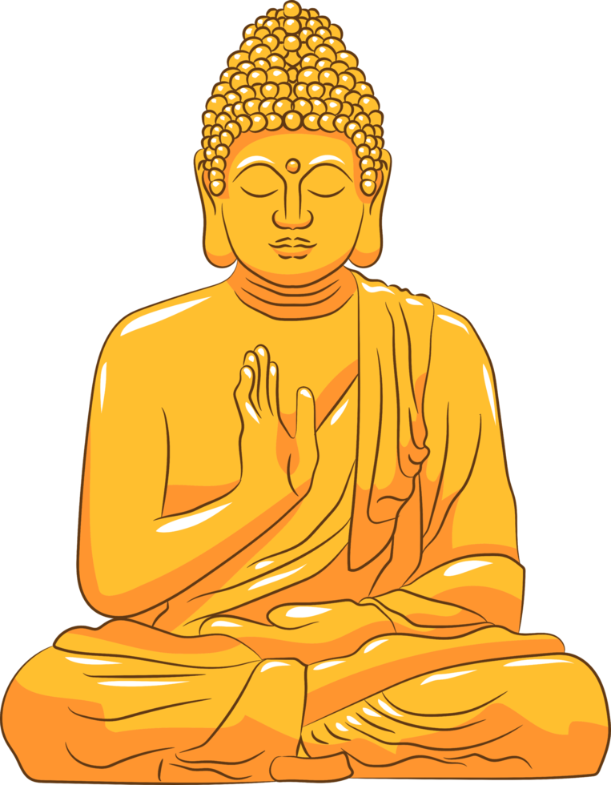

Buddhism is the dominant Religion in Bhutan, and is practiced all throughout the Region. Buddhism had been introduced to Bhutan in the 8th century by a indian master named "Guru Rinpoche", in which its citizens named "Buddha". Bhutan also houses various Temples and "Dzongs" that are reserved for practicing this very Religion.
Religion

The Tshechu Festival is both a major event and major part in Bhutanese Religion/Culture, and is celebrated during the Full moon. This Festival's purpose is to honor a major figure in Bhutanese history, "Guru Rinpoche", and what he has done for Bhutan. Activities in this event include Dancing, and Religious rituals/offerings.